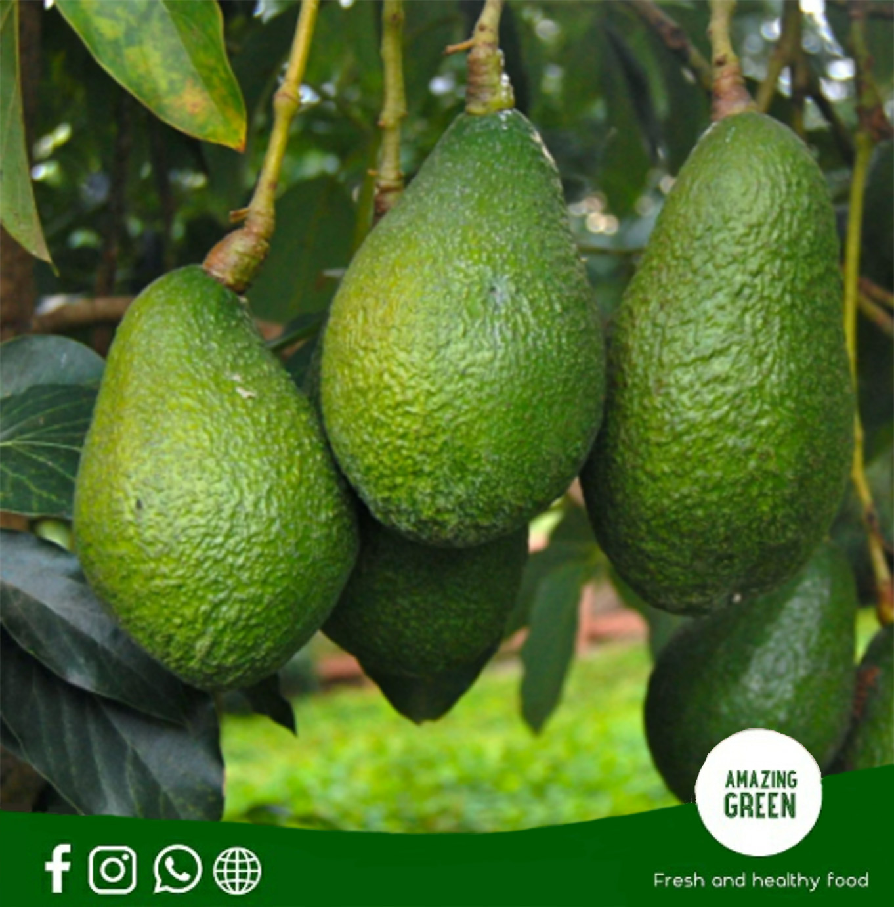

La Palta: Nutrición y Sabor
La palta peruana es considera como el oro verde en el país, tiene potasio y es fuente de energía y de grasas saludables. Su contenido en magnesio favorece al funcionamiento del sistema nervioso y muscular, así como a regular los niveles de glucosa en la sangre. También es importante para dar soporte al sistema inmunológico. Tiene ácido fólico o B9, que evita malformaciones durante el embarazo y la lactancia. El omega 3 de la palta cuida el sistema cardiovascular.
Nuestro compromiso es ofrecer un producto fresco, nutritivo y cuidadosamente seleccionado, garantizando la satisfacción de los mercados nacionales e internacionales.
